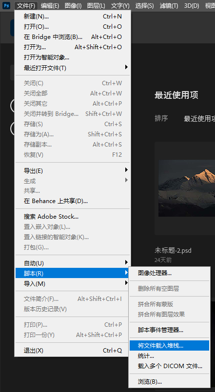
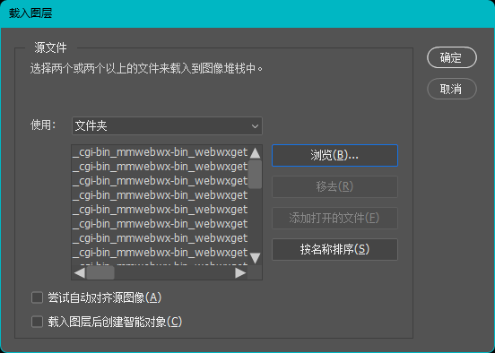
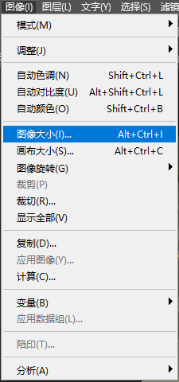
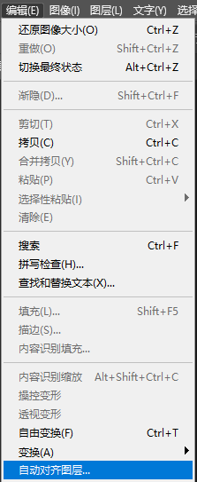
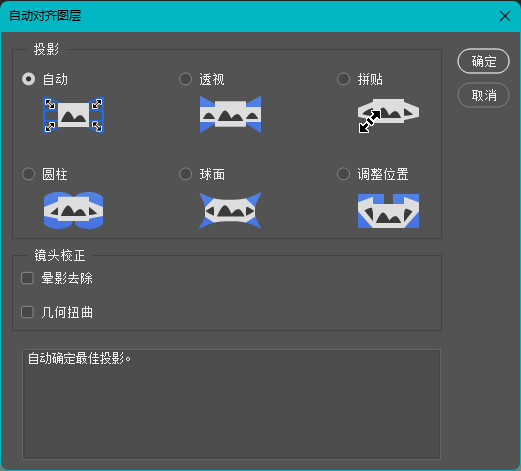
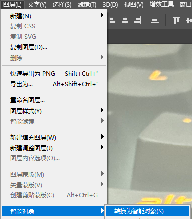
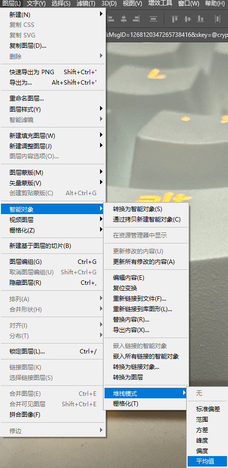
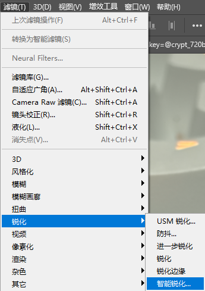

像素漂移 Pixel Shift
像素漂移 Pixel Shift
大家是不是常常在风光摄影、胶片翻拍等方面因为自己的相机像素量不高而苦恼？希望今天的手动摇摇乐的技巧能够帮助到大家！
效果

前期拍摄工作
有以下两种方式
手持
保证安全快门（）不糊片，收小光圈，并连续拍摄8张以上的照片。
三脚架
启动相机连续拍摄功能，并在拍摄间隔期间轻轻触碰三脚架，但是不要使三脚架及相机移动。
后期工作
1）首先打开Photoshop（中大有正版可以使用），点击左上角 文件-脚本-将文件载入堆栈，选择你拍摄的一组照片，不要勾选“自动对齐图层”、“载入图层后创建智能对象”选项；


2）点击最上面一个图层，并按住Ctrl+Shift，最后点击最下面的图层，即全选图层；
3）点击 图像-图像大小，将“调整为”选项调至“自定”，单位改为“百分比”，按照照片张数适当增加比例，“重新采样”选择“邻近（硬边缘）”；

4）点击 编辑-自动对齐，自动即可，“镜头校正”、“几何扭曲”不用勾选；


5）点击 图层-智能对象-转换为智能对象，并耐心等待；

6）点击 图层-智能对象-堆栈模式-平均值，并耐心等待；

7）可选：具体情况具体分析，若需进行锐化，点击 滤镜-锐化-智能锐化，“数量”输入300%、“半径”输入2。

像素漂移 Pixel Shift
http://noidealess.github.io/2025/03/05/Pixel-Shift/